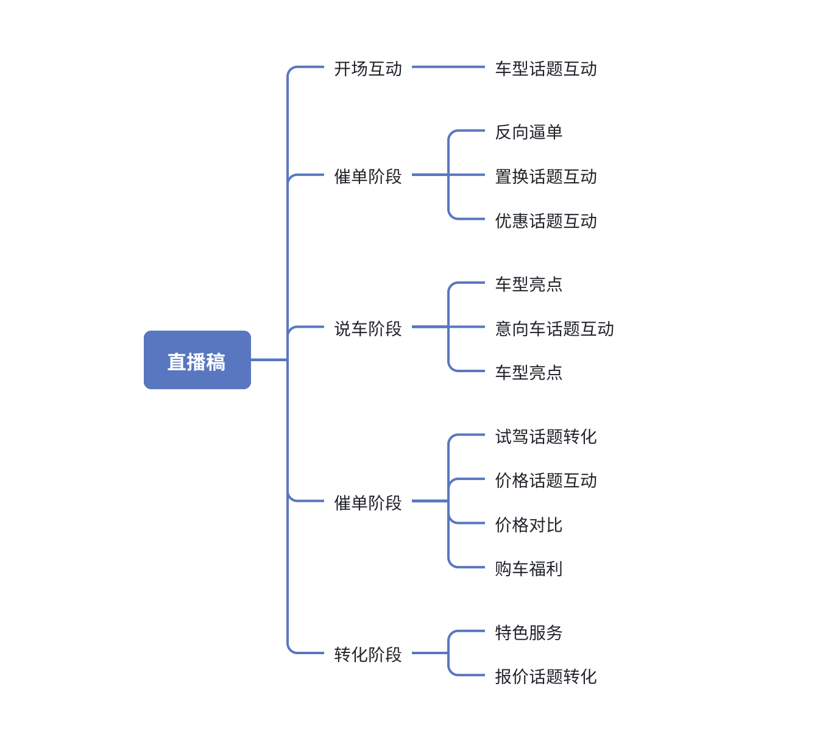
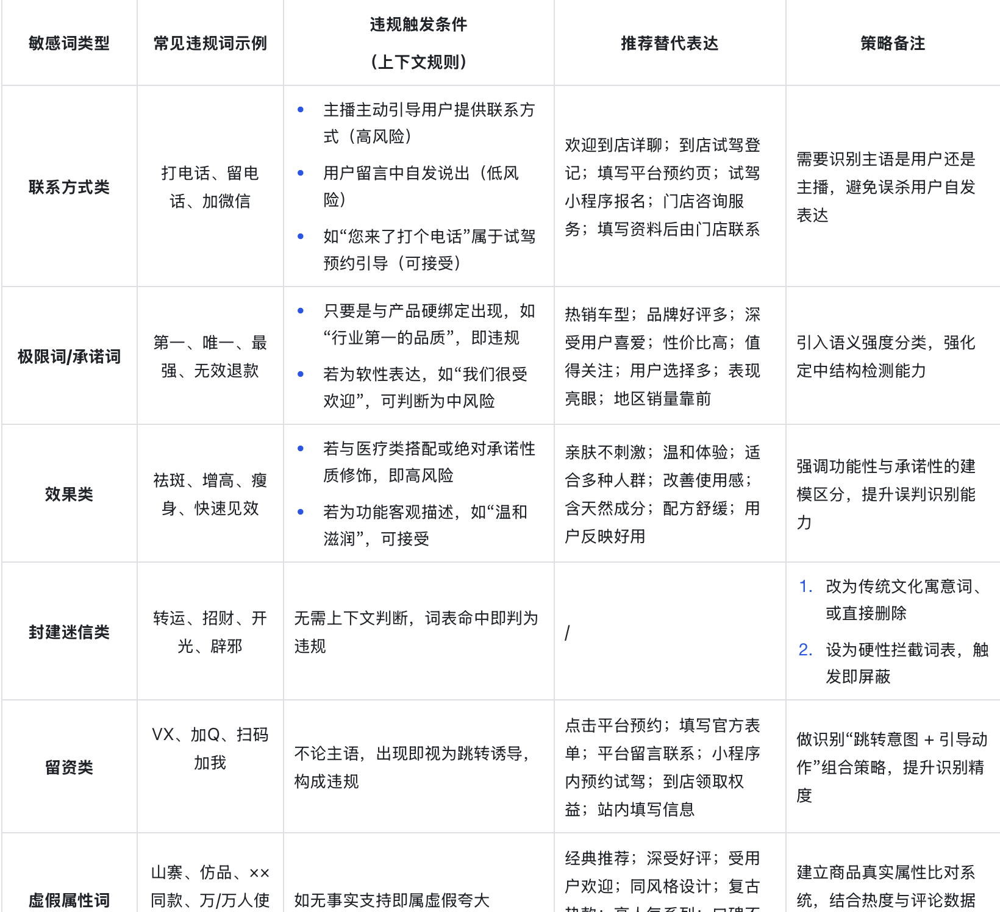

AI 数字人直播服务
腾讯-易车
数字人直播客服
针对汽车电商经销商 24 小时直播人力成本高的问题，打造 AI 数字人直播服务，负责直播稿生成与问答体系搭建，有效降低成本并提升直播转化率。
核心策略与落地
核心目标
提升 AI 客服模型准召率，进而带动直播间留资转化。
北极星指标：
模型准召率
留资转化率
核心执行模块
01
意图分类体系建设
梳理直播间高频场景，搭建一级/二级意图体系，撰写识别 Prompt，并与算法联动迭代。
02
回复策略标准化
统一「信息点-约束口径-引导动作」回复结构，支持多轮追问补全，提升对话可控性。
03
风控与合规策略
词库分级治理，调整 Prompt 降低违规。建立“实测-反馈-修正”闭环，进行多轮 AB 测试。
04
客诉与 Badcase 闭环
调研客户需求，沉淀高优 Badcase 清单推动修复，输出策略优化建议。
策略与方案展示
AI 客服意图分类体系

点击查看大图
构建一、二、三级意图标签，全面覆盖汽车直播间问答场景。
AI 直播稿件框架

点击查看大图
标准化「信息点-约束口径-引导动作」结构，模型段落直接匹配。
风控与敏感词策略

点击查看大图
词库分级治理，有效降低直播间封禁与违规触发概率。
核心业务成果
+8%
直播间留资转化率
89 / 93
意图识别准 / 召率
90%+
直播问题场景覆盖率
-10%
风控违规率
客诉率同步下降 6%